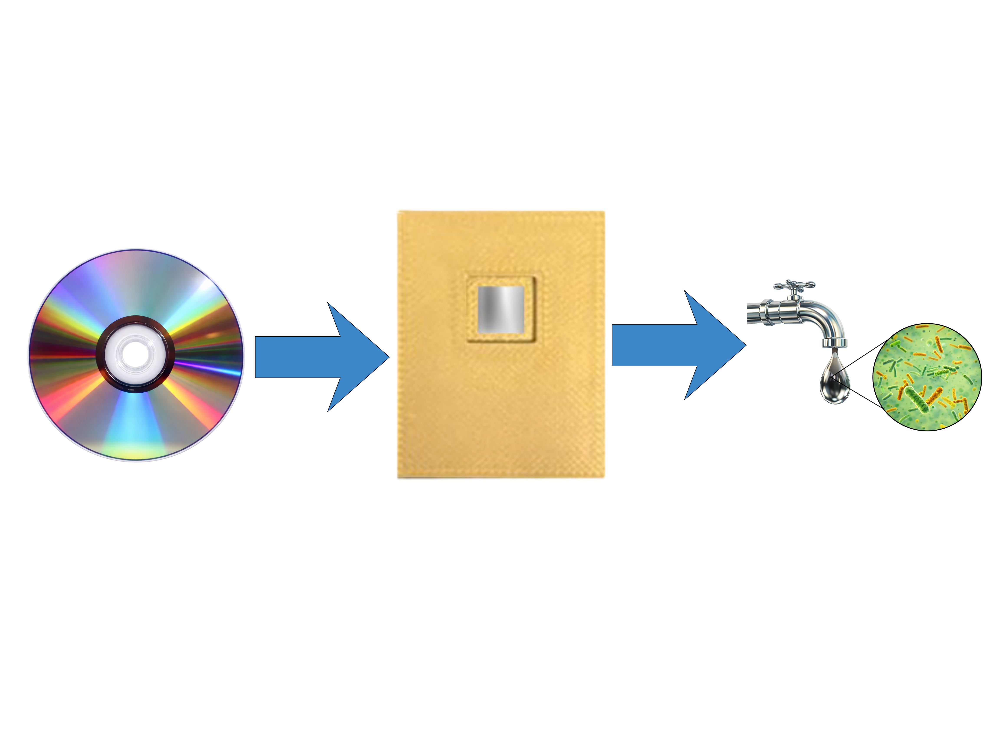

SJWP 2026 · Grating-Coupled SPR · Water Safety
DISCSPR
Optical discs (CDs, DVDs, Blu-rays) repurposed as nanoscale sensors for detecting water contaminants. Label-free, real-time detection for under $200.
~$200Apparatus cost
394nm/RIU (CD-R)
50 nmAg film thickness
3Disc types tested

ConceptOptical disc as a plasmonic grating substrate

Sensor SubstratesAg-coated BD-R, DVD-R, and CD-R discs

Home-Built ApparatusWavelength-modulated GC-SPR spectrometer built for ~$200
Illumination GeometriesBoth front-side and back-side configurations tested